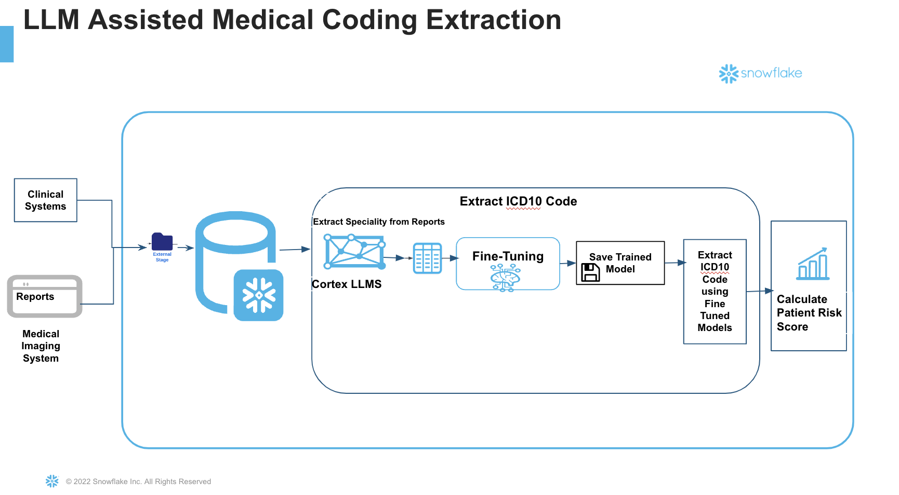

In the complex landscape of healthcare, the accurate calculation of patient risk scores is not just a matter of compliance, but a crucial aspect that can significantly influence a provider's financial reimbursements. Accurate risk scoring is instrumental in ensuring that healthcare providers receive the appropriate compensation for the level of care they provide, balancing the dual objectives of delivering high-quality care and maintaining financial viability. And these scores not only influence clinical decisions and resource allocation but also significantly impact reimbursement rates from insurance companies. Given their importance, the need for precision in calculating risk scores cannot be overstated.
Traditionally, healthcare providers have relied on various tools and methodologies to estimate patient risk scores. However, these conventional methods often fall short in addressing the complexity and variability inherent in patient data. In this Quickstart guide we will study how to leverage a large language model in the beginning and implement a Distillation flow with a Llama 405b to generate training samples to teach a smaller model perform the code extraction task with the same accuracy but lower cost. Large language model (LLM) distillation focuses on replicating the performance of a large model on a specific task by transferring its capabilities to a smaller model. This allows developers to achieve similar results to models like GPT-4 but with reduced computational cost and faster performance—though only for the targeted task.
The process treats the large model as the "teacher" and the smaller model as the "student." The student model could range from a simple logistic regression to a more advanced foundation model like BERT. By transferring essential knowledge from a complex teacher model to a smaller student model, the distillation flow preserves performance while reducing size and computational demands ,making them ideal for integration across a broader range of devices and platforms.
The Snowflake Cortex Fine-tuning function offers a way to customize large language models for your specific task. Cortex Fine-tuning is a fully managed service that lets you fine-tune popular LLMs using your data, and achieve the fewer trainable parameters, a higher training throughput, and, unlike adapters, no additional inference latency. Users can fine-tune and use industry-leading LLMs very easily with SQL and/or Python functions. - You select training dataset and optional validation dataset from your own data to fine-tune a foundation model. There is no data privacy or security concerns associated with data move or migration. Also Cortex fine-tuning does Automatic Parameter Efficient Fine-tuning (PEFT) without manual parameters.
This section will walk you through creating various objects

Steps: Step 1. - Clone GitHub repository.
Step 2. - Run the code under the scripts/setup.sql file in Snowsight SQL Worksheet. Once the objects are setup, now let us proceed to the notebook execution
Step 3. The Notebook is available to download from the notebook folder in the git repository.
Step 4 Run cell by cell in the notebook. We will explore the Notebook in detailed in the next section.
In this section we will explore the notebook. As mentioned earlier, do not execute Run All. Instead execute cell by cell.
Large language model (LLM) distillation aims to replicate the performance of a large model on a specific task by transferring its capabilities to a smaller, more efficient model. This enables developers to achieve results comparable to large models like GPT-4, but with significantly lower computational costs and faster execution—albeit limited to the targeted task.
In this process, the large model acts as the "teacher," while the smaller model serves as the "student." We will leverage Cortex LLM Functions and specifically the COMPLETE with llama3.1-405b which will act as "teacher" in order to prepare the training dataset for Fine Tuning.
Begin by importing Streamlit and any other necessary libraries.
To prepare training and validation data:
Once the data is available, we will begin the distillation process. The first step in the flow is having the LLM label the unlabeled data. For labeling, we will use a large model like Llama 3.1-405b. A prompt will instruct the model to:
The generated ICD10 codes along with the prompt and the report is saved in a table
We will now carry fine tuning of a small model using the labeled dataset with Snowflake Cortex Fine tuning and improve the accuracy, at both low cost and low latency results.
Healthcare providers and Medical coders can now extract patient risk scores using the accurately detected ICD Codes from the fine tuned model. If you have customers and a risk score mapping for various conditions, you can now use the ICD10 codes to calculate patient risk scores accurately and efficiently.
At the end of this guide, we have seen how to create a production ready AI based autonomous medical coding extraction pipeline which is accurate and cost-effective at the same time, and not rely on a low accurate Prompt engineered or RAG application We saw that how easily fine tuning alleviates the workload on physicians and medical coders, as we aim to advance the implementation of autonomous medical coding. This approach will not only ensure high accuracy and clinical specificity but also support various healthcare models paving the way for a more sustainable and effective healthcare environment. As you can see the ability to adopt fine tuning techniques from Snowflake enables a team to start with a small off the shelf model and customize the model to overarching goal for enhancing efficiency and achieving 100% accuracy.